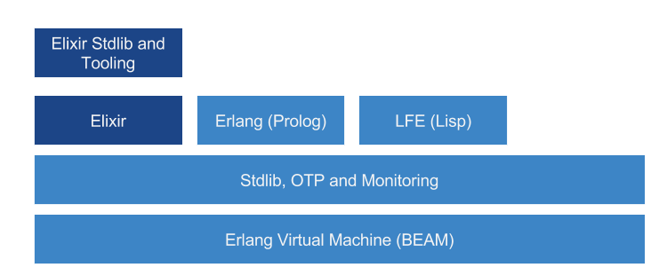

An Elixir Overview
Cristian Vasquez
 What is Elixir ?
What is Elixir ?
“Elixir is a dynamic, functional language designed for building scalable and maintainable applications.”
What makes a language functional oriented?
- First class functions
- High order functions
- Immutability
- Recursion (tail optimization)
- Lazy Evaluation
Elixir Origin

Creator Jose Valím, Rails core team member
Mission:=> To address Rails concurrency issues.
Enter Erlang
- Functional
- Concurrent (Actor Model)
- Fault tolerant
- Hight availability
- Distributed
Platform
Who is using Erlang?
- Whatsapp=>Chat service
- Facebook => Chat service
- Amazon => SimpleDB
- Ericsson=> Node support, GPRS and 3G mobile networks
- Heroku=> Routing layer
Who is using Elixir?
https://github.com/doomspork/elixir-companiesShow me the code !!
Language features
Structure
Code is structured in functions, modules and extended with macros and behaviours
defmodule Hello do
def world(message) do
print_message(message)
end
defp print_message(message \\ "hello") do
IO.puts "Hello #{message}"
end
end
Pattern Maching
the end of "=" as you knew it
x = "hello"
{x, y} = {2, 3}
# x -> 2
# y -> 3
[head | tail] = [1,2,3,4]
# first -> 1
# rest -> [2,3,4]
[{x,y} | rest] = [{1,0}, {1,1}, {2,2},{3,5}]
# x -> 1
# y -> 0
# rest -> [{1,1}, {2,2},{3,5}]
where is used
function definition
def hello_world(message) do
IO.puts mensarge
end
def hello_world(message, name) do
IO.puts "#{mensage} #{name}"
end
iex> hello_world("hello")
...> "hello"
iex> hello_workd("hello", "world")
...> "hello world"
with statement
with {:ok, image} <- ImageHandler.load_image(image_path, @ratio),
{:ok, code} <- CodeHandler.load_code(code_path)
do
get_needed_code(code, image)
|> construct_text_elements(image)
|> ImageHandler.build_svg(image, @fontSize)
|> ImageHandler.save_svg("out_test.svg")
|> ImageHandler.convert_to_png
|> Logger.debug
else
err -> err
end
case statement
iex> case {1, 2, 3} do
...> {4, 5, 6} ->
...> "This clause won't match"
...> {1, x, 3} ->
...> "This clause will match and bind x to 2 in this clause"
...> _ ->
...> "This clause would match any value"
...> end
Data Types
Basic
- Integer
- Float
- Atoms
- Regex
- Ranges
- Pids and Ports
- Binaries
- Date and Times
Collection Types
- Tuples => {1, "a", true, :var}
- Lists => [1, "a", true, :var] =~ [ 1 | [ "a" | [ true | [:var | []]]]]
- Keyword List => [name: "john", age: 22, single: true]
- Maps => %{:name => "john", :age => 22, :single => true}
- Struct => defmodule User, do: defstruct name: "John", age: 27
Inmutability
iex> x = [1,2,3,4]
iex> List.insert_at(x, 4, 5)
...> [1, 2, 3, 4, 5]
iex> x = 1
...> 1
iex> x = 2
...> 2
...> ## Rebinding ?
Pipe operator |>
Like unix pipes
"hello world"
|> String.upcase
|> String.split("")
|> Enum.take(2)
|> IO.puts
..> HE
Streams
iex> Enum.map(1..10_000_000, &(&1+1)) |> Enum.take(5)
...> [2, 3, 4, 5, 6] # 8 seconds later
iex> Stream.map(1..10_000_000, &(&1+1)) |> Enum.take(5)
...> [2, 3, 4, 5, 6] # immediately
Recursion
Tail optimization + pattern matching
# Non tail optimized
defmodule MyList2 do
def sum([]), do: 0
def sum([head | tail]) do
head + sum(tail)
end
end
# Tail optimized
defmodule MyMath do
def sum(list), do: _sum(list, 0)
defp _sum([], total), do: total
defp _sum([ head | tail ], total) do
_sum(tail, total + head)
end
end
Tooling
- IEx
- Hex
- Mix
- ExUnit
- docTest
Serious business
OTP
Scalability + Fault tolerance
Everything run inside a process

Creating proceses
The Basics
defmodule Caller do
def call(msg) do
pid = spawn(Test, :hello, [])
send pid, {self(), msg}
receive do
{:ok, message} -> IO.puts message
end
end
end
defmodule Test do
def hello do
receive do
{sender, msg} -> send sender, {:ok, msg}
end
end
end
Caller.call("Hello world")
OTP
(Open Telecom Platform)
- Genservers, Agents, Tasks, Flow, etc.
- Supervisors
- Hot code swapping
Pending more advance stuff
- Hot code swapping
- Macros
- Protocols
- Deployment exrm / destilery
- Distributed Elixir